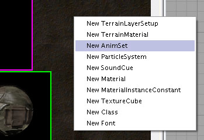
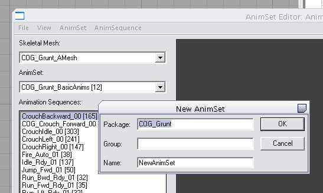

UDN
Search public documentation:
ImportingAnimationsTutorialJP
English Translation
中国翻译
한국어
Interested in the Unreal Engine?
Visit the Unreal Technology site.
Looking for jobs and company info?
Check out the Epic games site.
Questions about support via UDN?
Contact the UDN Staff
中国翻译
한국어
Interested in the Unreal Engine?
Visit the Unreal Technology site.
Looking for jobs and company info?
Check out the Epic games site.
Questions about support via UDN?
Contact the UDN Staff
アニメーションのインポート チュートリアル
ドキュメントの概要: PSA ファイルから Unreal エンジンにメッシュ アニメーションを取り込み、SkeletalMesh アクタを配置する方法を説明するチュートリアル。 ドキュメントの変更ログ: James Golding により作成および更新。はじめに
このドキュメントの内容はアニメーションにも適用され、Unreal Engine 3 のアート パイプラインの手引きとなるものです。ここでは特に新しいエンジンにおける機能や手順に焦点を当てています。旧バージョンから変更されていない機能については、UDN の他のドキュメントで取り上げて詳細に説明しています。コンテンツのエクスポート
Unreal Engine 3 では、アニメーション シーケンスは Maya または Max から ActorXJP プラグインを使用してエクスポートします。エンジンへのコンテンツ取り込み
アニメーションのインポート
Unreal Engine 3 では、PSA ファイルは AnimSet (アニメーションセット) オブジェクトの多数の AnimSequence (アニメーション シーケンス) としてインポートされます。マテリアルや静的メッシュと同様に、AnimSets は 汎用ブラウザ に表示されます。
新しい AnimSet の作成
PSA ファイルをインポートする前に、それらの AnimSet を作成する必要があります。新しい AnimSet を作成するにはいくつかの方法があります。- 汎用ブラウザ で、背景を右クリックし [New AnimSet] (新規アニメーションセット) を選択します。新しい AnimSet の名前と、格納先のパッケージ名を入力します。

- 汎用ブラウザ の [File] (ファイル) メニューから、[New] (新規) を選択し、[Factory] (ファクトリ) コンボボックスから [AnimSet] を選択します。新しい AnimSet の名前とパッケージ名を入力します。

- AnimSetViewer が既に開いている場合は、[File] メニューから [New AnimSet] を選択できます。新しい AnimSet の名前と、格納先のパッケージ名を入力します。

AnimSetViewer を開く
AnimSetViewer (アニメーションセット ビューア) ツールを使用して、既存の AnimSet に PSA ファイルをインポートします。ツールを開くには、以下のいずれかの方法を実行します。- 汎用ブラウザ で、AnimSet をダブルクリックするか、そのコンテキストメニューから [AnimSet Viewer] を選択します。目的の AnimSet が選択された状態で AnimSetViewer が開き、ロード済みのコンテンツから再生に適した SkeletalMesh (骨格メッシュ) を検出します。
- SkeletalMesh をダブルクリックするか、そのコンテキストメニューから [AnimSet Viewer] を選択します。選択したメッシュ上で AnimSet を再生できる場合は、左側の AnimSet コンボボックスに AnimSet が表示されます。
PSA ファイルのインポート
アニメーションのインポート先となる AnimSet を選択したら、[File] メニューから [Import PSA] (PSA をインポート) を選択します。次に、インポートする PSA ファイルを選択して [OK] を押します。左側のシーケンス リストボックスに新規シーケンスが追加表示されます。 新しい AnimSet の場合、最初にインポートしたアニメーションによってその AnimSet の 'track table' (トラックテーブル) が定義されます。後からインポートするアニメーションはすべて、このテーブルに従います。インポートする PSA ファイルに、ターゲット AnimSet のトラックテーブルに存在しないトラックが含まれている場合は、次のメッセージが表示され、トラックテーブルを延長してこの新しいトラック名を含めるかどうかの確認を求められます。Extra track (...) found in PSA but not in AnimSet. (PSA ファイルに、AnimSet に存在しない追加トラックが見つかりました) Would you like to add this track to all existing animations using the selected SkeletalMesh reference pose? (選択した SkeletalMesh 参照ポーズを使用して、このトラックをすべての既存アニメーションに追加しますか?)AnimSet 内の AnimSequences はすべて同数のトラックで構成する必要があるため、セット内の既存の AnimSequences すべてにもトラックを「作成」する必要があり、これには選択した SkeletalMesh の参照ポーズが使用されます。逆に、インポートする PSA ファイルに、ターゲット AnimSet のテーブルに含まれるトラックが存在しない場合は、次のメッセージが表示されます。
Could not find needed track (...) for this AnimSet. (この AnimSet に必要なトラックが見つかりませんでした) Would you like to use the selected SkeletalMesh reference pose to create the track? (選択されている SkeletalMesh 参照ポーズを使用してトラックを作成しますか?)これにより、選択されている SkeletalMesh の参照ポーズを使用して AnimSequence の新規トラックが作成されます。 Additive アニメーション (ターゲットポーズまたはベースポーズとして) を作成するのに使用されていたアニメーションをインポートすると、関連のある Additive アニメーションを自動的にリビルドするかどうかを確認するメッセージが表示されます。これは 2009 年 12 月 QA 承認ビルドの新機能です。更新したばかりで、アニメーションに必要な参照ポーズが含まれていない場合は、FixAdditiveReferences コマンドレットを実行してリビルドすることができます。 Additive アニメーションの詳細は、 AdditiveAnimation を参照してください。